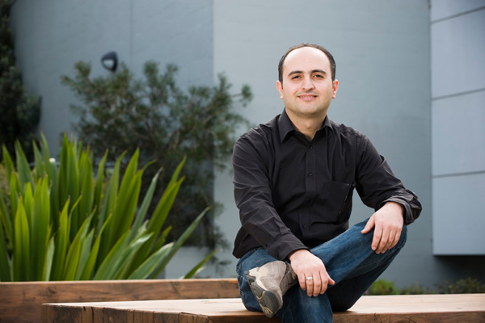

يقول: الخطة هي العودة إلى بلدي ونقل المعرفة ... من خلال العمل،
والتدريس والتشاور»، ويتابع وهكذا يتم بناء المجتمع».

الطالب : حسين الصادق
ان البحث الهندسي الذي يجريه الطالب حسين الصادق في جامعة موناش قد يشكل مرجع الذي بامكانه ان يغييرالمعالم الهندسية في المدن العراقية. واما عن أسلوب التدريس الذي اختبره خلال الفترة التي قضاها كطالب دكتوراه قد يلعب دور هام في تغيير اساليب التعليم التقليدية لدى مواطنيه.
يأمل حسين في العودة إلى وطنه العراق، ويأمل في أن يكون مصدر إلهام لأسلوب التفكير النقدي والتعلم المستقل» في الفصول الدراسية، بدلا من تدرييس الطلاب الحلول السليمة.
يقول:"الخطة هي العودة إلى بلدي ونقل المعرفة ....من خلال العمل، والتدريس والتشاور»، ويتابع"هكذا يتم بناء المجتمع».
مجموعة الخريجين من موناش
فيما يلي أبرز خريجي موناش:
- السيد محمود أحمد (ماجستير في القانون (LLM(DigEconLaw 2004)) ، مدير أول لعلاقات مجلس الادارة وإدارة الشركات، شركة الإمارات للاتصالات المتكاملة ، الإمارات العربية المتحدة.
- رئيس القضاة الكرام ديانا براينت (LLM 1999) ، رئيس قضاة محكمة الأسرة في استراليا
- السيدة نوال بوهيد (Buhaid (MNurs 2009)، رئيس التمريض ، وزارة الصحة ،البحرين
- السيد تيم كوستيلو ، AO (BJuris عام 1976 ، ليسانس الحقوق عام LLB 1978، DipEd 1979) ، الرئيس التنفيذي لمؤسسة الرؤيا العالمية - استراليا
- السيد توني دي إيلويزيو (درجة البكالوريوس عام BA 1971 ، ليسانس الحقوق مع مرتبة الشرف LLB(Hons) 1973) ، رئيس مجلس إدارة هيئة الأوراق المالية والاستثمارات الأسترالية (أسيك)

حسين الصادق ، مرشح دكتوراه في الهندسة
- السيدة وان ام دي دود (MNurs 2006) ، مدير التمريض ، مستشفى عيادة جدة الجديدة في السعودية
- البروفيسور ديفيد دي كريستر ، Kretser، AC (دكتوراه في الطب عام MD 1969، HonLLD 2006) ، حاكم فكتوريا و باحث طبي حسين الصادق ، مرشح دكتوراه في الهندسة
- السيدة تريسي فيلوز (BEc 1987) ، المدير الاداري -- استراليا ونيوزيلندا ، مايكروسوفت (MICROSOFT)
- السيد محمود حشيش (1999 MComp) ، وكبير موظفي الامور التجارية ، شركة الاتصالات فودافون في البحرين
- السيد غراهام صموئيل ، (LLM 1977) ، رئيس لجنة المنافسة و حماية المستهلك الأسترالية
- الدكتور Anusorn Sangnimnuan (دكتوراه 1985) ، رئيس شركة البترول Bangchak العامة المحدودة